As with other social media websites, getting your Instagram account hacked is sadly not uncommon. Cyber crime has accelerated in just the last few years, with social media offenses, in particular, increasing by nearly 300-fold between 2015 and 2017 in the U.S. alone.
Such activities have only grown in creativity. Criminals have continued to use traditional methods of keylogging and sifting through leaked password databases; though phishing has been a seemingly popular tactic as of late.
Most recently, users have had their Instagram account hacked through a phenomenon on the platform known as the “Nasty List“. Compromised accounts would send out-of-character messages to their followers, exclaiming that they’ve landed on this so-called list, followed by a clickable link.
As all phishing schemes go – the link then directs the user to a fake Instagram login page. If you fail to notice the fake URL, you may just enter your login credentials. Just like that, the hacker gets ahold of your account, and everything that comes with it.
Courtesy of ThatsNonsense.
Scary as these hackings may be, users can easily set safety measures in place to protect themselves from such crimes. Even if they do fall victim – Instagram, thankfully, has procedures set in place to help recover your account.
Below is an in-depth guide of how to spot a hacking, dealing with a hacked Instagram account, and practices to keep your account safe.
Signs Your Instagram Was Hacked
It’s often easy to tell if your profile has been compromised. Other times, however, the intrusion may be more subtle. If any of these red flags ring a bell – your account may very well be at risk.
Unusual Profile Activity
One of the easiest ways to spot a hacking is to spot any foreign actions taken on your account. Are you suddenly following random people you’ve never seen before? Have you been sending users strange, unauthorized messages – or leaving comments you had no knowledge of?
An obvious sign of a hacked Instagram account is unfamiliar activity taking place on your behalf. It also helps to have friends or followers notify you of odd behaviour. The earlier you acknowledge these signs, the faster you can secure your account.

Instagram also has a feature where users can track their previous logins. This data gives you a detailed record of the month, day, year, and time of each login.
To view this on mobile, simply tap on the hamburger menu at the top-right corner of your screen. Select “Settings”, “Security”, and “Access Data”.
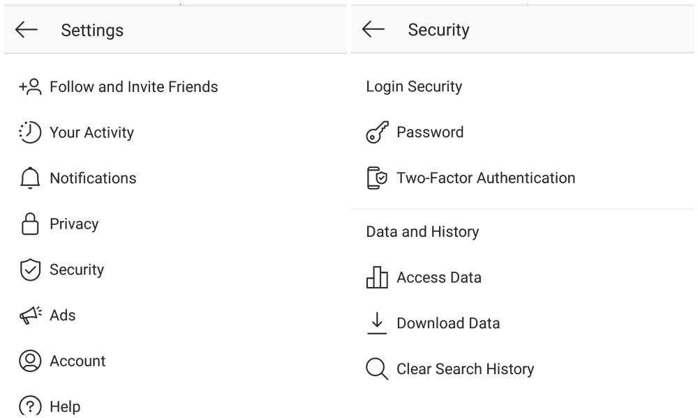
Scroll down to the “Account Activity” section and tap on “View All” under “Logins”.
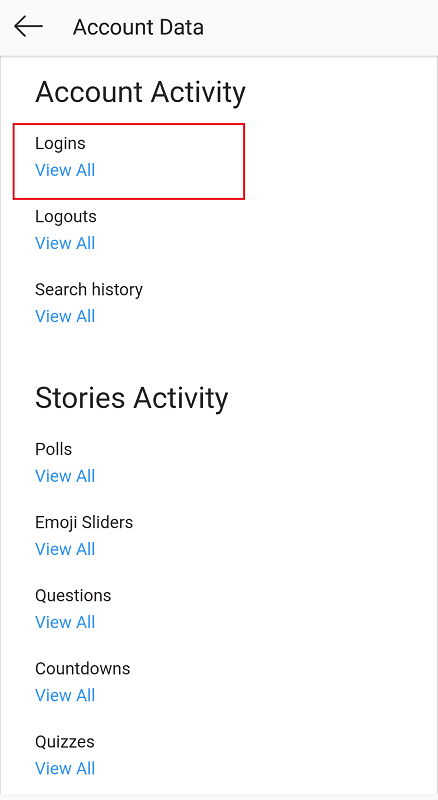
This should lead you to a page displaying all the recorded logins for your account.
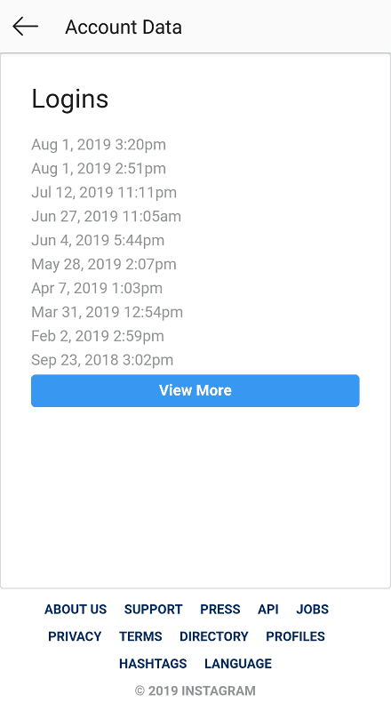
To view this information on a desktop, select the gear icon next to “Edit Profile” on your profile page.
Select “Privacy and Security”, then scroll down to “Account Data”.
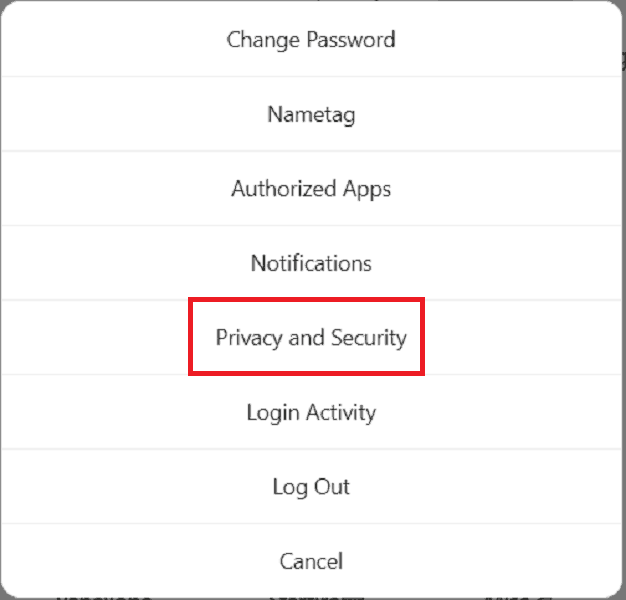
Select “View Account Data.”
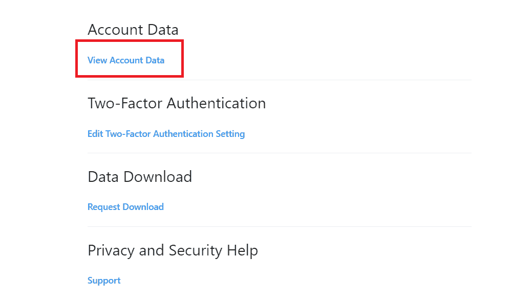
Then, select “View All” under “Logins” in “Account Activity”, which should display the exact same data as the page on mobile.
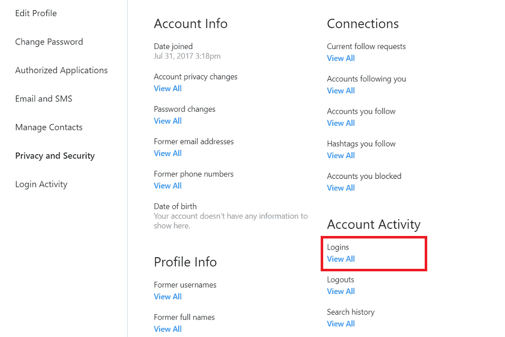
You can additionally select “Login Activity” on the left-hand sidebar to view the locations of all your previous login attempts. This can help you track any suspicious activity in foreign or unusual areas.
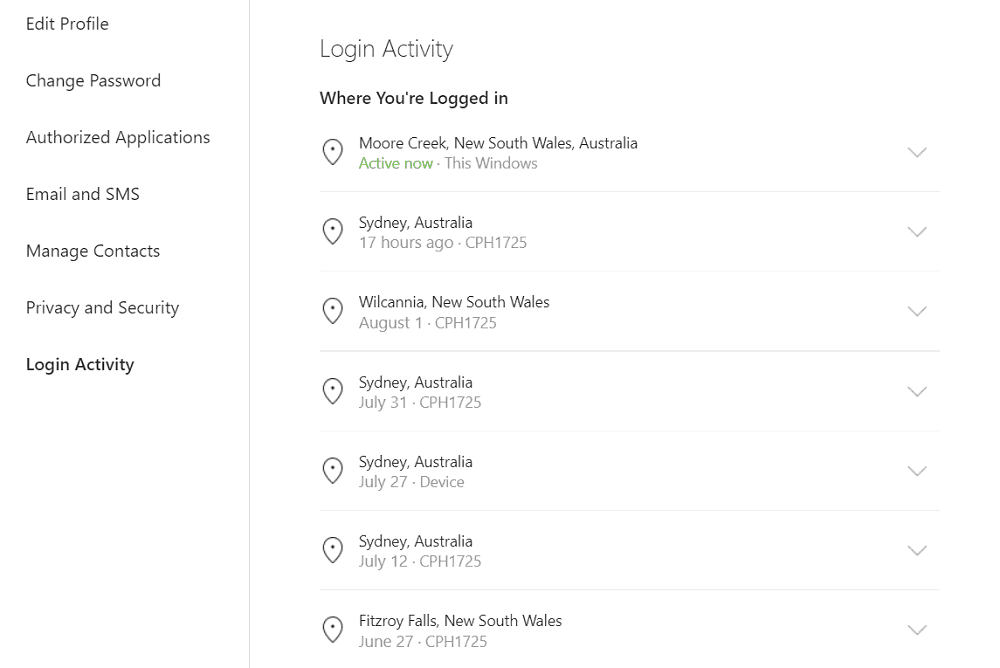
Uploaded Photos That Aren’t Yours
It goes without saying – but finding new uploads that weren’t posted by you is a surefire sign that your account’s been hacked.
Just a few days ago, Aquaman star Jason Momoa found himself victim to a strange and blatant Instagram hack; where recent content on both his feed and stories began filling up with spam links to Tesla, Playstation, and Apple product giveaways.
Courtesy of BossLogic (Twitter account).
Artist Bosslogic was one of the more prominent online figures to notice this, announcing the incident on Twitter. While Momoa never acknowledged the hacking, the actor has since deleted all spam content from his profile.
It goes to show, however, that even A-list celebrities aren’t safe from cyber crime. Hackers can easily use your feed to distribute spam, phishing tactics, or simply incriminating and inappropriate content.
Inability to Log In
Lastly, if you’ve found yourself unable to log in to your account (even after entering the right password multiple times), then you may have just gotten your Instagram account hacked.
However, this could also be due to simply forgetting the correct password. Since both the mobile and desktop version on Instagram allows for automatic access – provided you’ve been using the same devices – it’s possible to eventually forget your password after the first time logging in.
If the latter’s the case, simply tap on “Get help signing in” underneath the login fields (or the “Forgot?” link next to the password field on desktop). Instagram will then request for your e-mail, and send over the next steps for changing your password and regaining access to your account.
Steps to Take if With a Hacked Instagram Account
Getting your Instagram hacked can be a nightmare, but it doesn’t have to be the end of days.
The platform has a few set procedures in place to aid in retrieving compromised accounts. These are easy-to-follow protocols, and while they may not guarantee your account back in more extreme cases – they’re effective and worth a shot.
Scenario #1: Can You Still Log in to Your Account?
The best-case scenario for Instagram hackings is still being able to access your account as normal. This will allow you to change your e-mail and password as required, preventing the hacker from doing further damage.
To reset your password, tap into your “Security” options under “Settings”, and select “Password”.
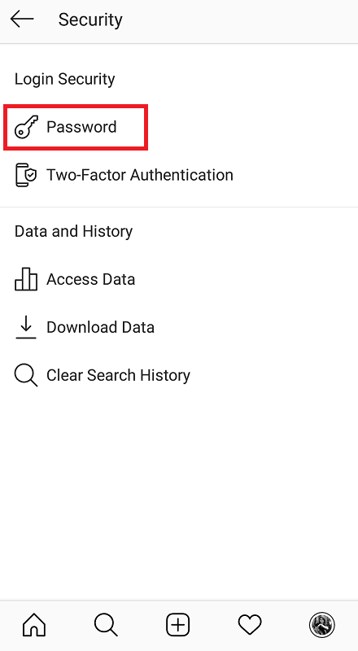
This page will allow you to select a new, stronger password to lock down your account.
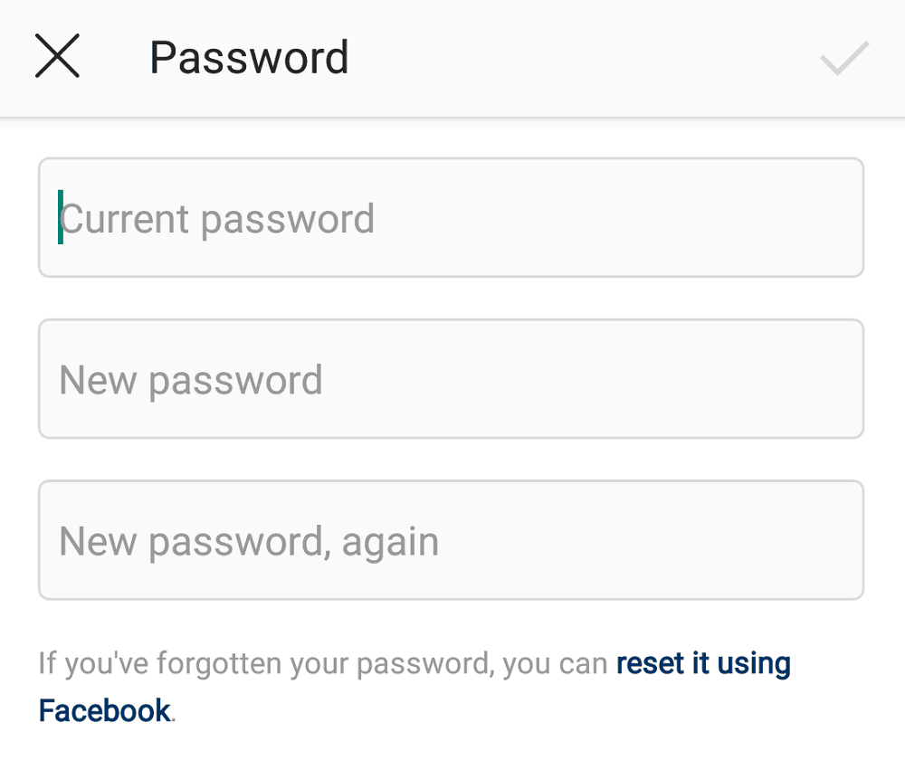
If you’ve forgotten your original password, you can alternatively reset it through Facebook, provided you have a linked account.
On desktop, select the gear icon on your profile and click on “Change Password”.
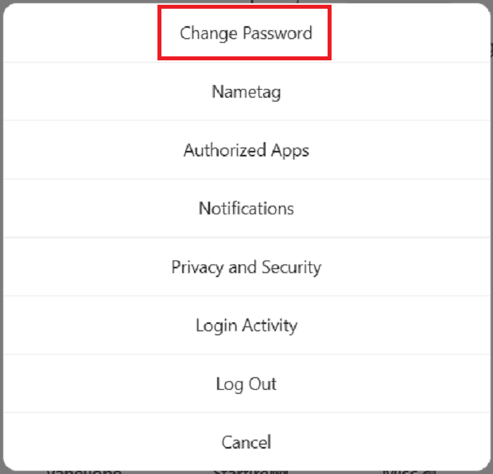
The app will then ask you to enter in your old password, and updated one accordingly.
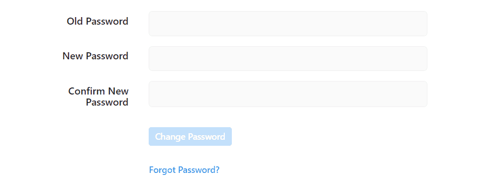
As with mobile, those who’ve forgotten their passwords can simply select the “Forgot Password?” link. Instagram will then request for your e-mail or username, and send you an e-mail with a link to change your current password.
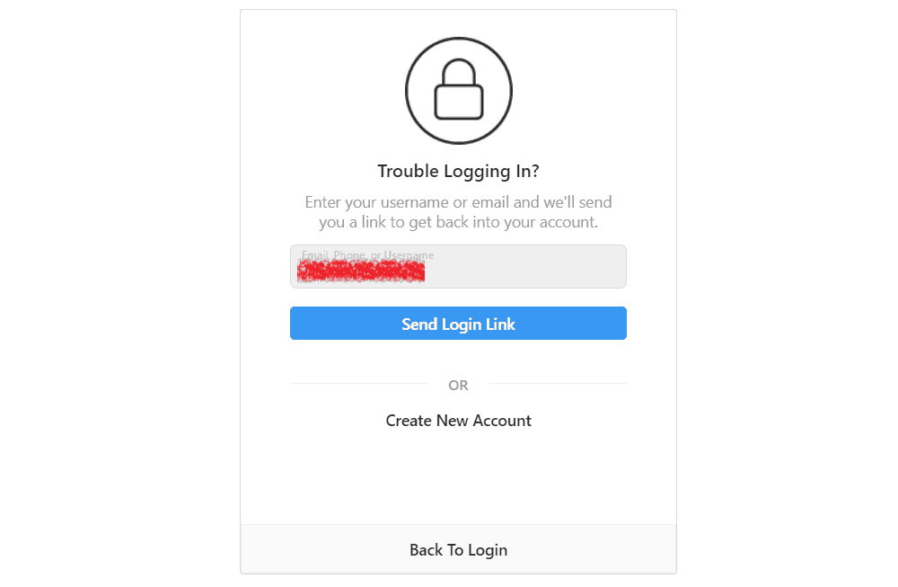
Scenario #2: Your Login Credentials Have Changed
A more nefarious hacker will invade your account, and make all the necessary changes to bar you from access. These include both your password and e-mail, presenting a far trickier situation.
Luckily, all is not lost – Instagram continues to have methods in place for handling these severe issues.
Hacked Instagram Account Tip #1 – Check Your Inbox For Instagram’s E-mail
When requesting an e-mail change on an account, Instagram immediately sends a confirmation message to the user’s original e-mail address.
A hacker’s attempt to change your e-mail address can thus be easily blocked by reverting the change through the link in Instagram’s message. You can then follow the steps to change your password (by going through the “forgotten password” procedure) on the login page to retrieve your account.

However, if you’re unable to revert the e-mail change, and you still don’t have the right password to enter your account, it’s recommended you report the account to Instagram.
Hacked Instagram Account Tip #2 – Use A Security Code
Another way to regain access to a hacked Instagram account is to request for a security code. This will be sent to both your e-mail address and phone number as a means of confirming your identity and ownership of the profile.
To get a security code, go to the app’s login screen. Tap on “Get help with signing in.” You’ll then be asked to enter your e-mail address, username or phone number.
Choose whether you’d prefer the code sent over through e-mail or by text message.
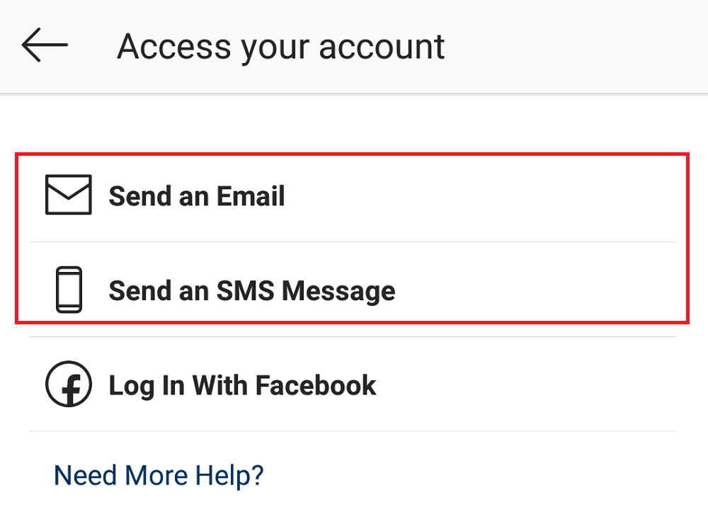
A six-digit code will then be sent to the contact information provided. Enter this onto the page, tap “Next”, and follow the rest of the instructions provided.
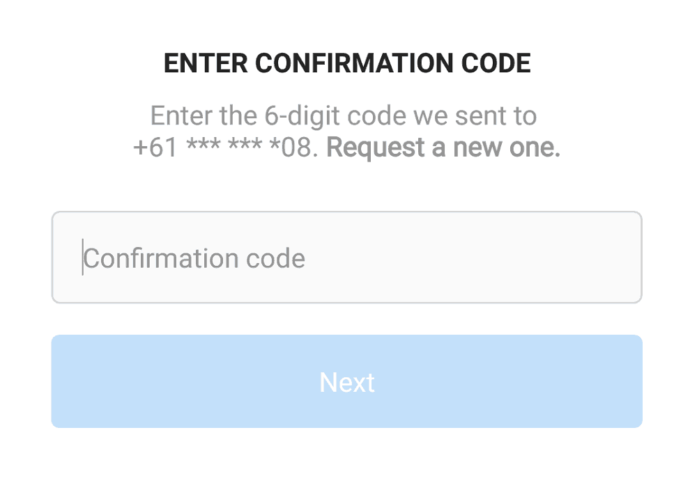
Hacked Instagram Account Tip #3 – Reporting the Account
If all else fails, you can also opt to report the account.
Select the “Get help with signing in” on the login screen of the app, and fill in your e-mail address. Tap “Next”.
Select “Need more help?” at the bottom of your options list, taking you to a page for submitting any help requests to the Instagram team.

Tap the “My account was hacked” option, and enter the appropriate e-mail information.
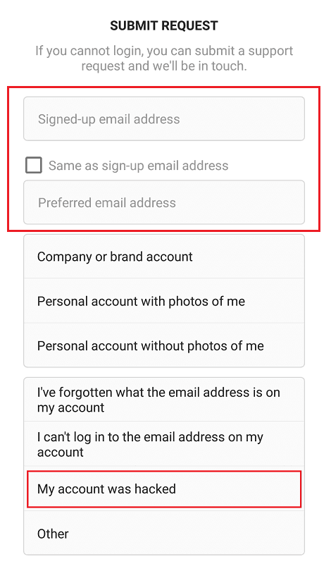
Add any further details of your situation that may be of help to the Instagram team, and hit “Submit request”.
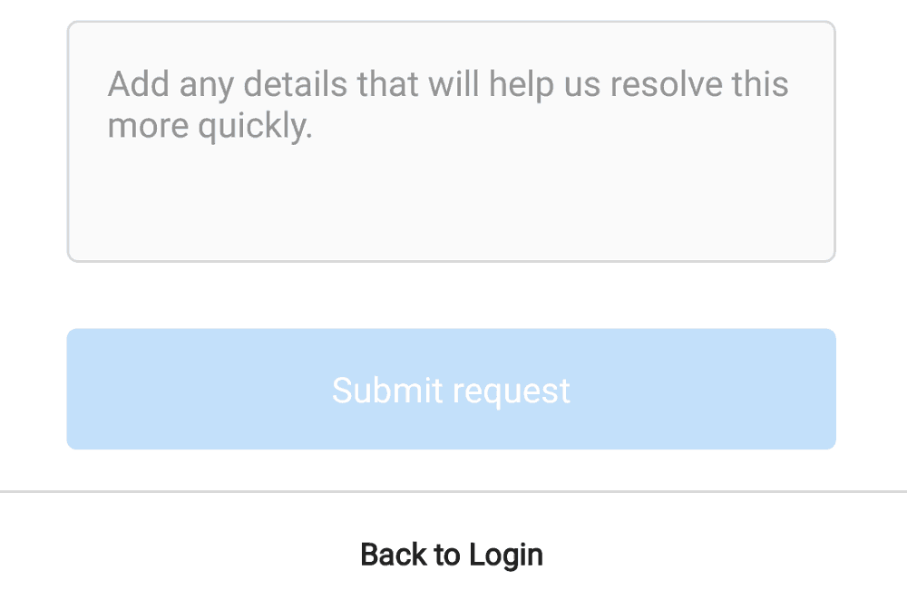
You should then receive an automatic response from Instagram Security asking to verify your identity. For this, you’ll need (either one or both of the requirements below):
- a photo of yourself holding up a handwritten code provided to you by Instagram
- the e-mail and phone information you used to sign up your account, and the type of device you used to do so (ex. iPad, iPhone, Android device, etc.)
Instagram will then send over further instructions upon receiving your verification. You can then follow these steps to regain access to your account.
How to Avoid Getting Your Instagram Hacked
It’s fortunate to have security measures in place in case of hacked accounts, though it’s important to have preventative methods of avoiding such issues in the first place.
Keeping your account safe comes down to a few safety practices. While easy to implement, they’re also easy to forget – until you fall victim to an Instagram hacking yourself. To keep your profiles from falling in the wrong hands, be sure to remember these three key tips:
Keep Your Password Thoroughly Protected
Another obvious but oft-forgotten tip is to have a strong, extra-secure password in place. According to Instagram, a good password is comprised of letters, punctuation marks, and at least six numbers; as well as being different from all other passwords you use on the internet.
Changing your password on the regular is also recommended. Instagram will sometimes inform you of this, should they uncover any alarming information during automated security checks. During these, the platform will occasionally uncover stolen login information. If they discover that your password to be a part of this, you’ll be given a message informing you of the security issue and be advised to make the change.
Users are also advised to never communicate their password to others. Having a secure e-mail account in place is additionally a must. Being safe with your e-mail information ensures safety for your Instagram profile, as this is where the app sends much of your security information.
Finally, when using a shared or public device, always be sure to log out of Instagram after use. Never check the “Remember Me” option, as this keeps you logged in even after exiting the browser window.
Enable Two-Factor Authentication
Use Instagram’s two-step authentication process to be extra secure with your login procedures. With this enabled, the you’ll be prompted to enter an SMS security code during login, along with your username and password. This code will be sent to your personal phone number, making it far less convenient for hackers to access your account.
To enable the two-factor authentication process, select the “Security” category in your Settings menu.
Tap on “Two-Factor Authentication”.
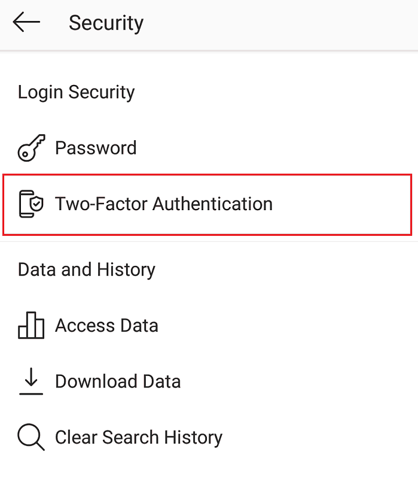
You’ll then be asked to choose your preferred security method – either through text message or an authentication app. For simplicity, let’s go with “Text message”.
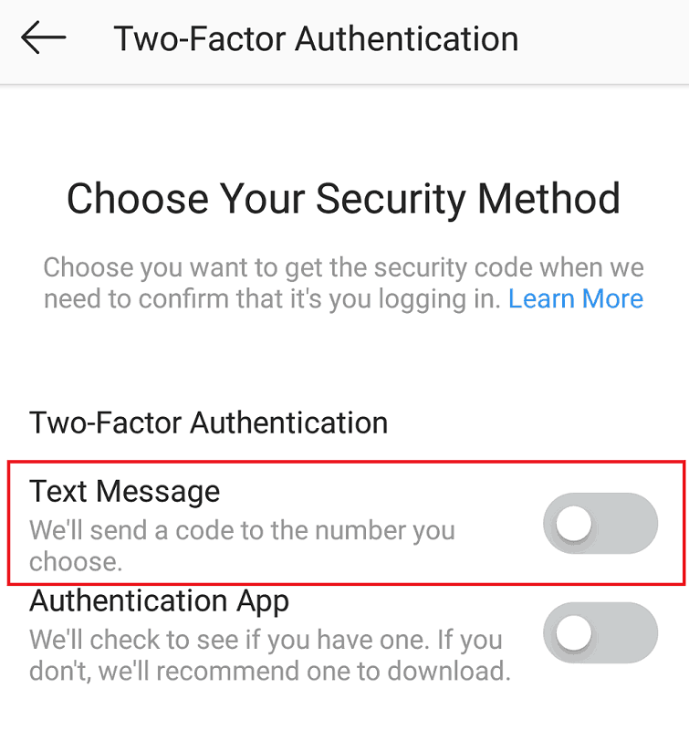
The app will then prompt you to enter your phone number. A six-digit code will be sent to this number, which you’ll then be asked to enter.
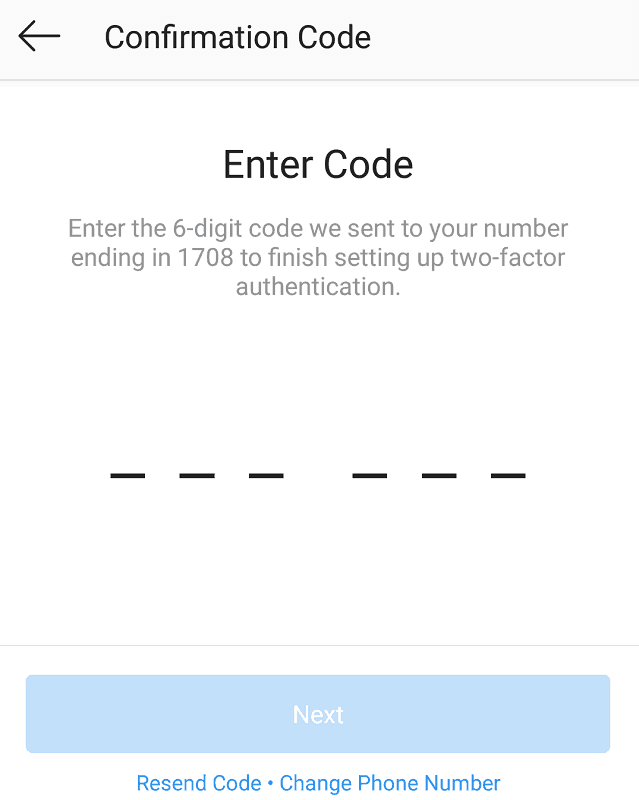
This will enable your two-factor authentication. Every time you log into a device the app doesn’t recognize, you’ll now be prompted to enter the appropriate code.
Avoid Sketchy Third-Party Apps
Lastly, steer clear of suspicious third-party applications.
While some such apps have gained a reputable image among the Instagram community (ex. Hootsuite, Later, etc.), it’s best to keep away from others you can’t 100% trust. Some of the worst offenders may share your private data with others, or even use your login information to post on your behalf. As such, think before authorizing such applications.
To view all your authorized third-party apps (and cut ties with any that may be causing odd behaviour), visit your profile page on your Instagram desktop. Select the gear icon, and click on “Authorized Apps”.
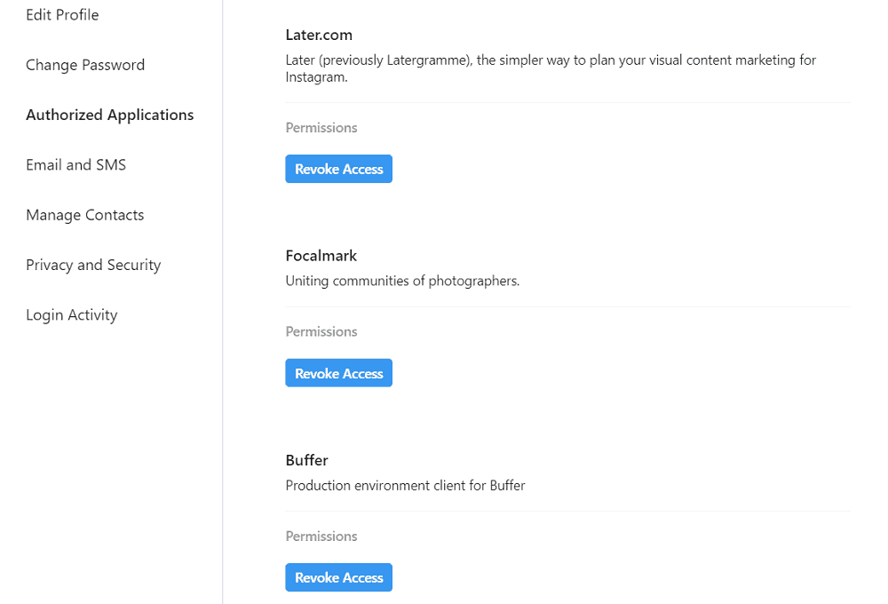
You’ll then be taken to a page listing all the apps that you’ve authorized to access your account. If any may appear shady, simply click on the blue “Revoke Access” button to get rid of them.
Prevent Instagram Hackings With the Right Safety Measures
Getting your Instagram account hacked may can seem like a far-off chance, until it happens to you.
Avoid having your hard work stolen or sabotaged by ensuring the safest use of the app possible. This involves being smart with keeping your private information, having solid security methods in place, and knowing the next steps to take in case of a breach. Don’t fall victim to the rising trend of cyber crimes – with these strategies, you’re sure to keep your Instagram protected and hacker-free.


1 Comment